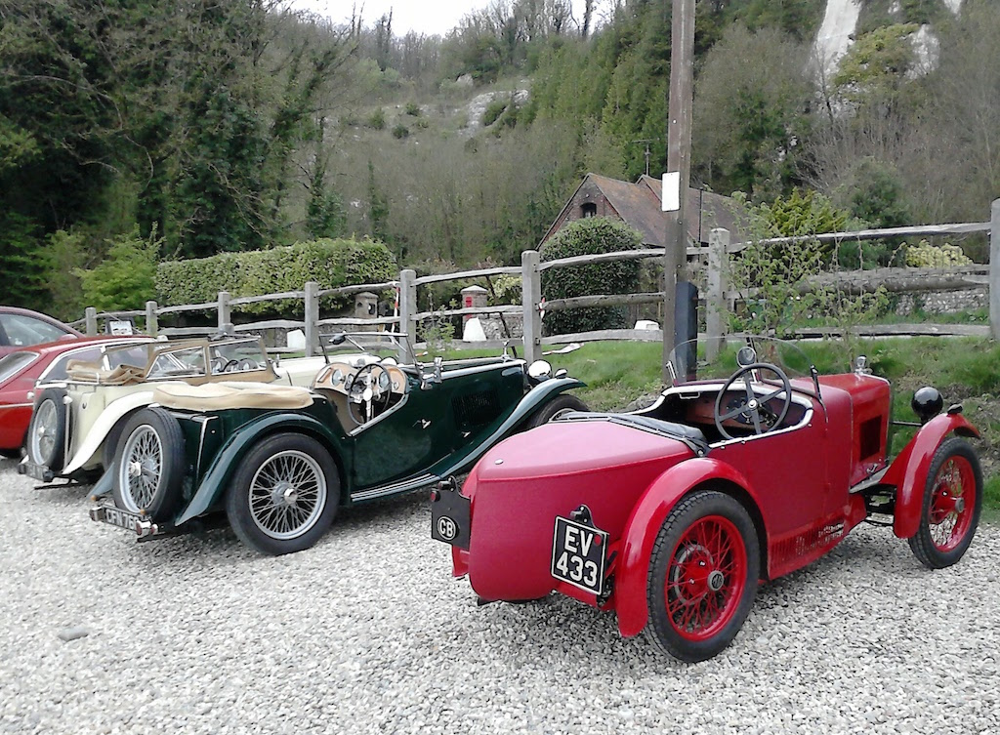
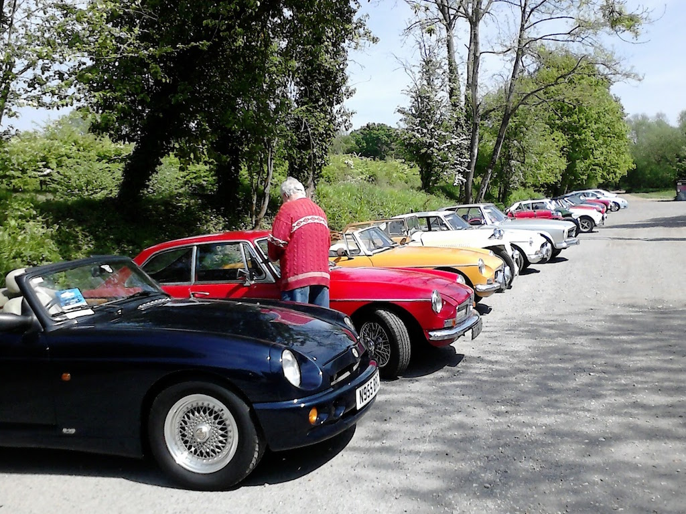
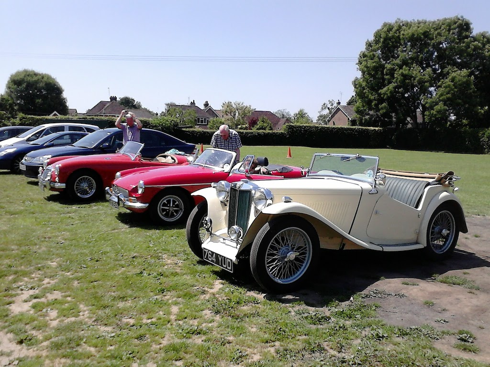
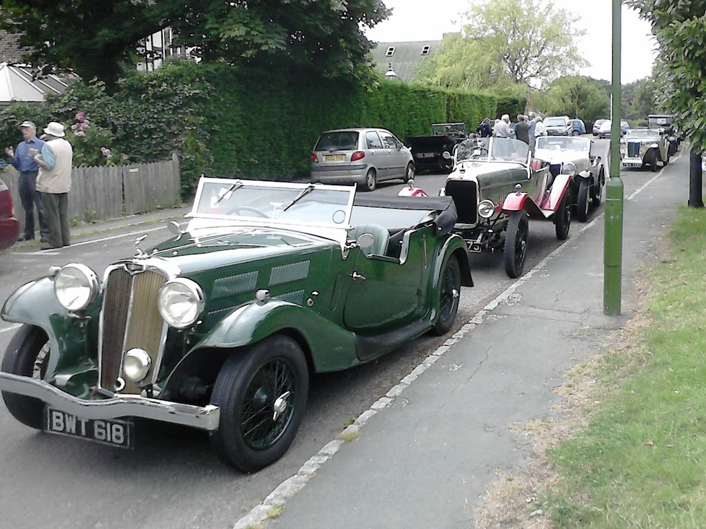
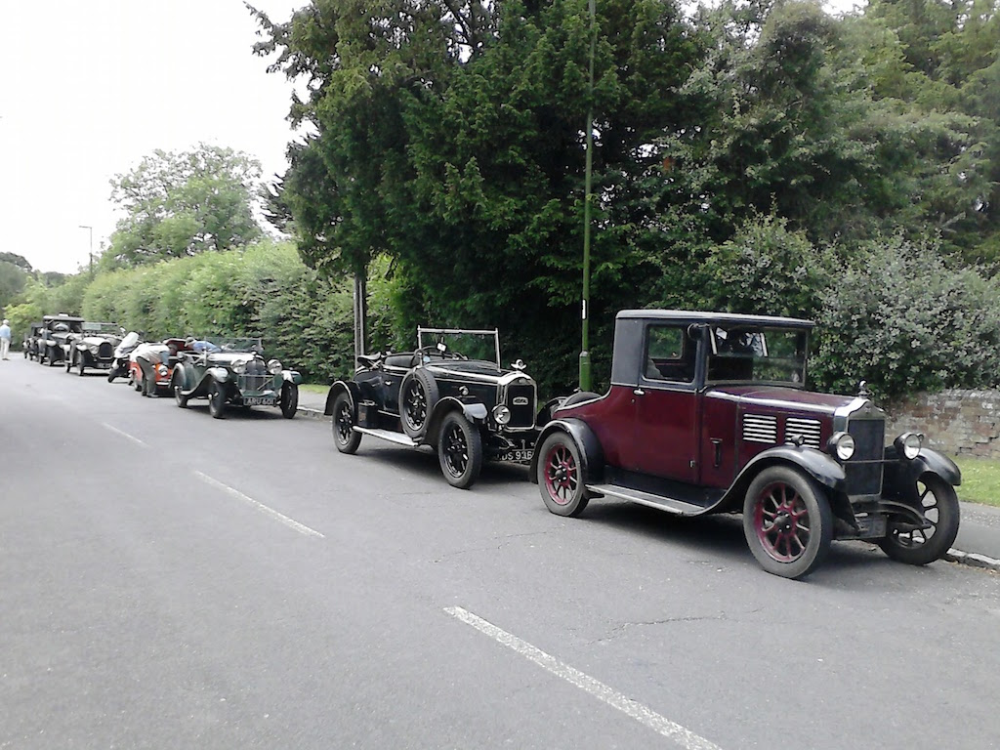
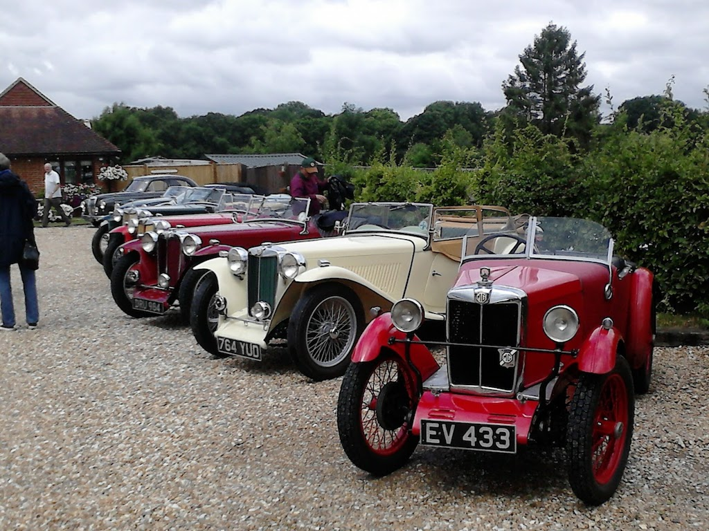

TC4985 Outings - 2017
VSCC Lunch at Dial Post, March
This year I had only taken TC4985 out for two short runs, one in February (two of my figure of eight circuits amounting to 12 miles) and one earlier in March when I drove up to Henfield and back (15 miles). These were really just to give the car a short run and to maintain the charge in the battery. However, on Friday 17th March we drove up to Dial Post to meet for lunch with Hamish and Simon. I really should have taken some photos, particularly of Simon's 1932(?) Riley and of Hamish's Triumph Dolomite, which showed serious overheating problems. Simon's latest addition to his 'stable' replaces another, very similar, Riley, but this variant is said to only have eight examples remaining! We only had soup since we were going to a fish & chip supper that evening. We only did a total of 20 miles.
Sussex Wanderers April, Run around Chichester
This was the first Wanderers run of the year, starting at the Black Rabbit just outside Arundel and ending at The Gribble (named after Mrs Gribble who lived there when it was a private house) at Oving, south of Chichester. The run itself was 30 miles, but I did 73 miles in total. The day started chilly, but the sun came out en route and it was a pleasant run. As is usually the case, I had to follow someone who had a navigator. They only went wrong once and everyone in the procession followed them!
Sussex Wanderers May 2017, Horsham to Loxwood
A very fine, sunny day. We met at The Boars Head on the outskirts of Horsham and drove the twenty something miles to the Onslow Arms at Loxwood, down some very narrow lanes. There were about 28 cars (including a split screen Morris 1000 saloon and an oldish Mercedes) and again I had to follow others since I was on my own. Some people had booked a trip on the Wey & Arun canal, but I came home after lunch. Surprisingly they were not very well organised in the pub, considering they had our orders in advance. Overall I drove 61 miles.
Sussex Wanderers June, Borde Hill to Isfield
Probably the best summer's day so far this year for a run between the cafe at Borde Hill Gardens near Haywards Heath, where we had coffee, to the Laghing Fish pub in Isfield, East Sussex, for lunch. Borde Hill was 19 miles from home and the run was 25 miles. Overall I did 77 miles, with clear blue skies all day.
VSCC Lunch at Dial Post, June
The green car in the foreground is Hamish and Sue's Triumph Gloria. I met them at the VSCC lunch gathering at Dial Post. As can be seen from the second photo, there was quite a collection of interesting cars.
Angela was busy with errands for Bay, so couldn't come along. The round trip, via the Beeding petrol station, was 22 miles.
Sussex Wanderers July, Billy's to Alfold Bars
This month's run started at Billy's on the Road, just north of Billingshurst. After coffee about 50 people, in a selection of MGs, set off for a 25 mile drive, partly through the Surrey countryside, to a pub at Alfold Bars, on the B2133 just beyond Loxwood. It was well organised and I had a good run home, arriving at about three after a total of 63 miles.
Sussex Wanderers August, Bury to Goodwood
We met at the Squire & Horse at the bottom of Bury Hill. I had the hood down on the way there, but as we left it started raining. It then rained all of the 25 miles to the Goodwood race circuit. I tried just following the procession of MGs, but lost them on one point (being stuck behind a dust cart going up a steep hill), missed the turn and had to do a three-point turn on a main road. We had hardly finished parking at Goodwood when we were shepherded on to the track. Still in the rain we did four laps in single file. However, this year the escort car travelled at a reasonable speed. In fact I could only just keep up, doing an indicated 50 mph along the straights. We then retired to the old control tower for lunch. Luckily I got my lunch quickly and then drove home (in the rain). By the time that I got home, after a total of 78 miles, at about 3:30 I was quite wet.
It was after this run that I put the car on axle stands to check it over and clean underneath. In the process I discovered a little oil in the rear off-side brake drum and a lot of oil in the near-side drum. Normally they are dry.
Return to MG TC4985